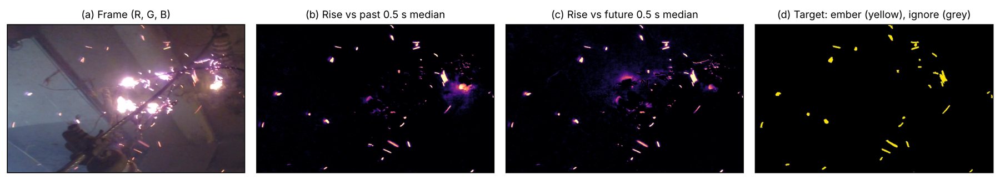
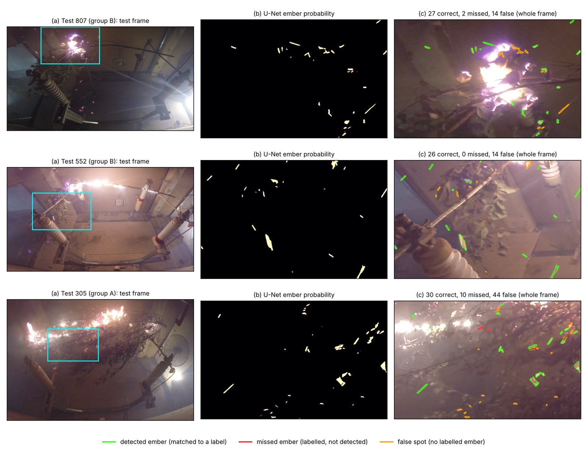
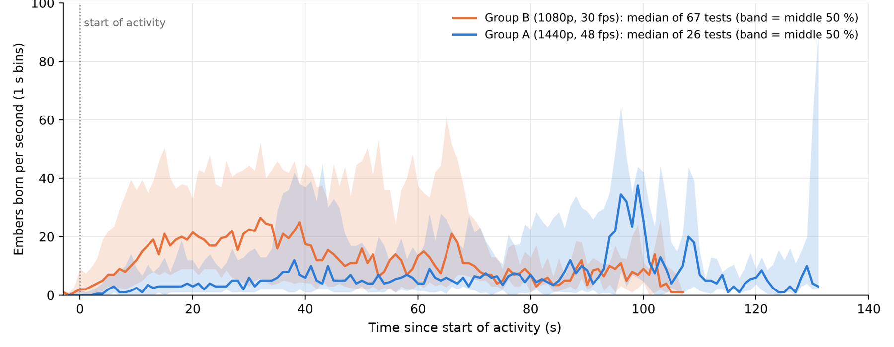
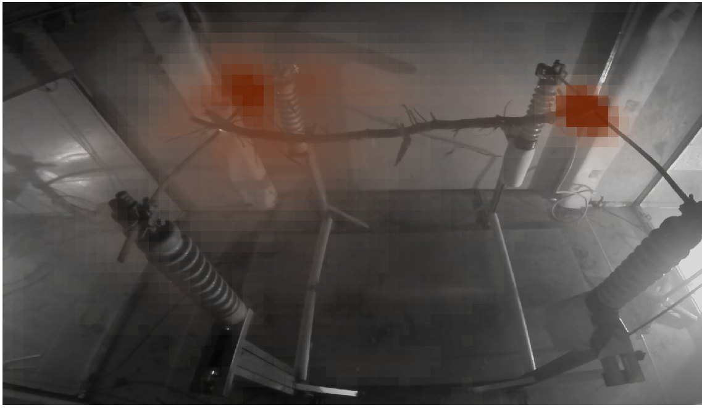
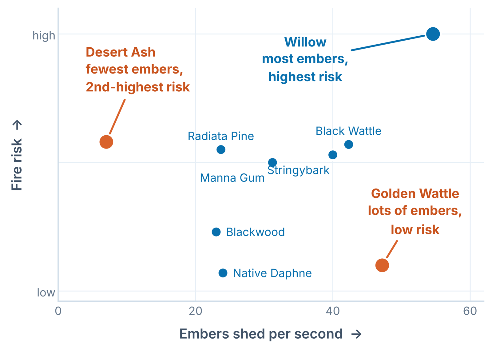

You’ve seen the poster. Here’s the full story: both videos, what the AI found, and what it means for keeping powerlines from starting fires. If it’s worth your time, there’s a People’s Choice vote at the end.
INSIDE THE AI
Embers are a few pixels wide, last a fraction of a second, and fly past a bright flame of the same colour. A simple “find the bright spots” rule fails. So I hand-labelled 3,755 embers in 445 frames and trained a U-Net, a neural network that labels every pixel.

Embers found
Overall score (F1)
F1 balances two things: how many of its detections are real, and how many real embers it finds. 1 is perfect. The AI’s lead held on 12 of the 15 test videos.

THE FINDINGS · 93 TESTS · 148,530 EMBERS
In a typical test, with more than 100 in its busiest second.
Travelling 30–40 cm. Most burn out before leaving the camera’s view.
They leave the branch slowly rather than being shot out.
The branch is still burning.
The line is a typical test; the shaded band covers the middle half of tests. The rate builds over the first 10–15 seconds, then keeps going for tens of seconds. Orange and blue are the two camera set-ups.


Darker orange = more embers start there. They come from the points where the branch touches the wires, and along the burning branch, almost nowhere else.
WHAT CHANGES THE DANGER
How long the fault lasts
Embers per second
A branch across two wires burns out in about a quarter of the time but sheds embers about twice as fast. Of all the test conditions, the starting current was most closely linked to how fast embers came out.
Embers per test

THE SURPRISE
More embers≠ more danger
Each dot is a tree species. Willow fits the obvious rule: the most embers and the highest fire risk. But overall there’s almost no link.
Desert Ash sheds the fewest embers yet ranks second for fire risk, most likely because its slow faults give a few large embers time to reach the ground. Golden Wattle sheds plenty and is low risk.
It’s not how many embers. It’s which ones, and when.
So protection needs to be fast, not just sensitive.
HONEST LIMITS
Speeds in metres are approximate; comparisons between tests use the same camera view.
Tiny contact sparks can look like embers to the AI.
When hundreds overlap, they merge into one spot, so counts there are too low.
Only 7 of the 93 tests didn’t start a fire, so that comparison is rough.
FAQ
Not yet. It analyses recorded test videos, so it’s a measurement tool. The next step is lining up ember timing with the electrical signals, to count how many embers escape before protection trips.
On 15 videos it never saw while learning, it found 82% of the hand-labelled embers, with an overall score (F1) of 0.65 against 0.41 for a carefully hand-tuned detector.
For the Victorian Government’s Powerline Bushfire Safety Program, Marxsen Consulting staged over a thousand of these faults on a 22 kV test rig in 2014–15 and filmed every one. I analysed 100 of them in depth.
Retrain with the extra hard frames already labelled, run the pipeline on the rest of the dataset, separate sparks from fire-starting embers, and link ember timing to the electrical records.
Worth it? Vote for it.
This project is in the People’s Choice award at the WISE × VINES STEM Design Expo, Thursday 19 November. Votes are counted at 2:30 pm.
ABOUT THE PROJECT
Huy Vu, Bachelor of Engineering (Honours), Electrical and Electronic
NEF4201 Capstone · Supervisor: Assoc. Prof. Cagil Ozansoy
Victoria University, Melbourne · 2026
The first per-ember measurements for powerline vegetation faults: how many embers, how fast, which way, from where and for how long, and what that means for how quickly protection must act.